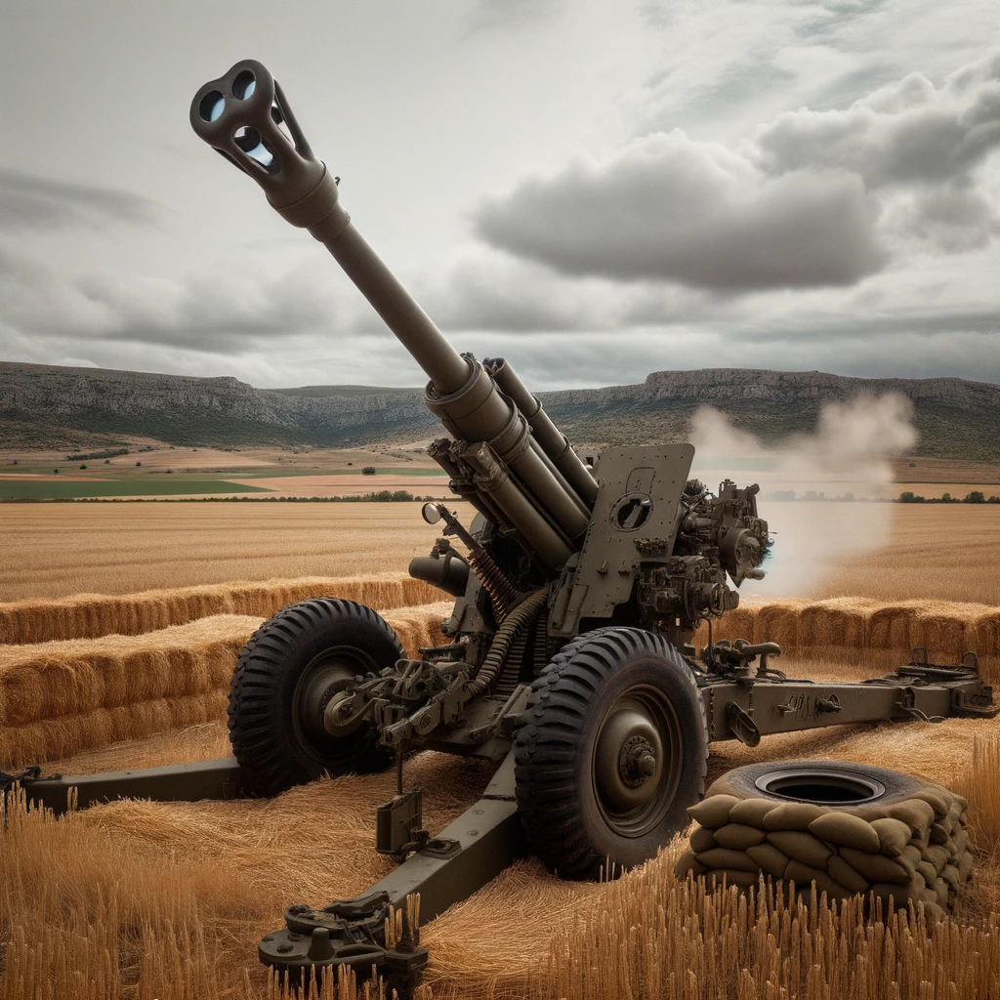

155/52 SIAC
El obús 155/52 SIAC (Sistema Integrado de Artillería de Campaña) es un
obús autopropulsado desarrollado por el consorcio español Santa
Bárbara Sistemas, perteneciente al grupo General Dynamics. El SIAC es
un sistema de artillería de largo alcance diseñado principalmente para
las Fuerzas Armadas de España, aunque también ha despertado interés en
otros países. Características principales: Calibre: 155 mm Alcance:
Gracias a su cañón de 52 calibres, es capaz de disparar proyectiles a
una distancia de más de 40 km. Movilidad: El obús SIAC está montado
sobre un chasis de orugas, lo que le proporciona una buena movilidad
en terrenos difíciles. Automatización: El sistema cuenta con un alto
grado de automatización, lo que reduce la tripulación necesaria y
aumenta la rapidez en la ejecución del disparo. Municiones: Puede
disparar una variedad de municiones, incluidas las de tipo
convencional y las de precisión guiada. Sistemas electrónicos: Está
equipado con sistemas de navegación y puntería de última generación,
lo que le permite disparar con gran precisión. Protección: El
habitáculo está protegido contra armas ligeras y es resistente a los
efectos de las armas químicas, biológicas y radiológicas. El SIAC se
desarrolló para modernizar y reemplazar los sistemas de artillería más
antiguos en servicio en el Ejército Español. Su diseño y
características lo hacen adecuado para una variedad de misiones, desde
el apoyo directo en el campo de batalla hasta misiones de interdicción
y contrabatería. El obús 155/52 SIAC es una muestra del compromiso de
España con la modernización y el desarrollo de capacidades militares
avanzadas, y refleja la capacidad de la industria de defensa española
para producir sistemas de armas de alta calidad.